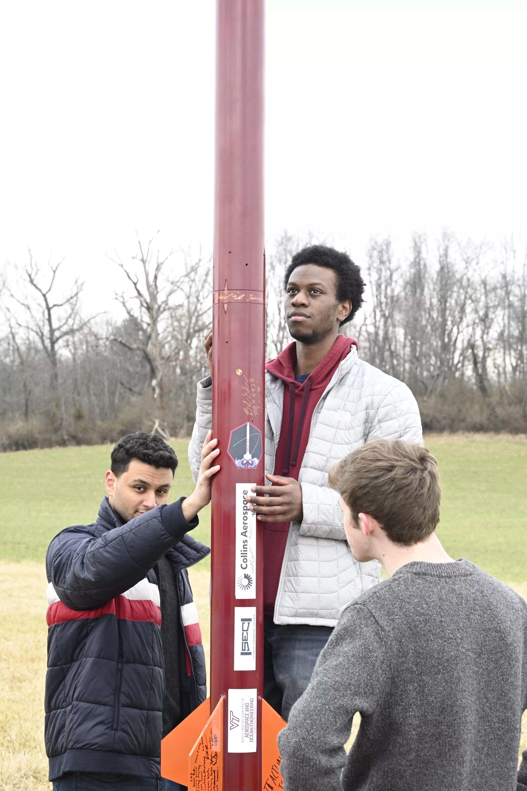

<style type="text/css">

  #photos {
    -webkit-column-count: 4;
    -moz-column-count:    4;
    column-count:         4;  
  }

  #photos img {
    width: 100% !important;
    height: auto !important;
  }

  #photos img:hover {opacity: 0.7;}

  @media (max-width: 1200px) {
    #photos {
    -moz-column-count:    4;
    -webkit-column-count: 4;
    column-count:         4;
    }
  }
  @media (max-width: 1000px) {
    #photos {
    -moz-column-count:    3;
    -webkit-column-count: 3;
    column-count:         3;
    }
  }
  @media (max-width: 800px) {
    #photos {
    -moz-column-count:    2;
    -webkit-column-count: 2;
    column-count:         2;
    }
  }
  @media (max-width: 400px) {
    #photos {
    -moz-column-count:    1;
    -webkit-column-count: 1;
    column-count:         1;
    }
  }
</style>

<section id="photos" class="m-2">
  
  
  
  
  
  
  
  
  
  
  
  
  
  
  
  
  
  
  
  
  
  
  
  
  
  
  
  
  
  
  
  
  
  
  
  
  
  
  
  
  
  
  
  
  
  
  
  
  
</section>

<!-- Modal -->
<div class="modal fade" id="imageViewer">
  <div class="modal-dialog modal-fullscreen">
    <div class="modal-body">
      </img>
    </div>
  </div>
</div>